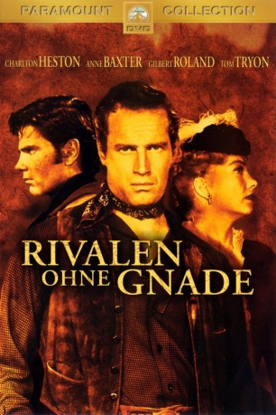

#11588 Rivalen ohne Gnade
Alternativ: Three Violent People (Englischer Titel)
 
 IMDB-Wertung: 6.4 / 10
IMDB-Wertung: 6.4 / 10  Metascore: 0
Metascore: 0 
Texas nach dem Bürgerkrieg: Die gespannte Atmosphäre bildet den Hintergrund dieses opulenten Westerndramas. Charlton Heston spielt Colt Saunders, einen Bürgerkriegsveteranen, der nach Jahren auf dem Schlachtfeld zu seiner Texasranch zurückkehrt. Dort aber warten andere Konflikte auf ihn. Da ist zum einen seine junge Braut Lorna, die sich verzweifelt bemüht, ihre wilde Vergangenheit als Tänzerin in den Saloons von St. Louis zu verbergen. Eine größere Bedrohung aber geht von einer Bande rücksichtsloser Steuereintreiber und deren korrupten provisorischen Regierung aus. Sie will Colts wertvollen Besitz pfänden, um sich das Land selbst anzueignen.
Jahr: 1956
Dauer: 99 Minuten
FSK: 16
Land: USA Studio: A Paramount PictureTonspuren: DD2.0 - ,
Untertitel:
Auflösung: 1080p (1920x1080) Größe: 7833 MB
Genre: Western
Regisseur: Rudolph Maté
Drehbuch: James Edward Grant, Leonard Praskins, Barney Slater
Soundtrack: Walter Scharf
Darsteller:
 Charlton Heston als Capt. Colt Saunders
Charlton Heston als Capt. Colt Saunders Anne Baxter als Lorna Hunter Saunders
Anne Baxter als Lorna Hunter Saunders- Gilbert Roland als Innocencio Ortega
- Tom Tryon als Beauregard 'Cinch' Saunders
 Forrest Tucker als Deputy Commissioner Cable
Forrest Tucker als Deputy Commissioner Cable- Bruce Bennett als Commissioner Harrison
 Elaine Stritch als Ruby LaSalle
Elaine Stritch als Ruby LaSalle Barton MacLane als Yates
Barton MacLane als Yates- Peter Hansen als Lt. Marr
 John Harmon als Mr. Massey
John Harmon als Mr. Massey- Ross Bagdasarian als Asuncion Ortega
 Robert Blake als Rafael Ortega
Robert Blake als Rafael Ortega Jamie Farr als Pedro Ortega
Jamie Farr als Pedro Ortega- Raymond Greenleaf als Carleton
 Roy Engel als Carpetbagger
Roy Engel als Carpetbagger Argentina Brunetti als Maria
Argentina Brunetti als Maria Robert Arthur als One-Legged Confederate Soldier (uncredited)
Robert Arthur als One-Legged Confederate Soldier (uncredited) Bill Baldwin als Carpetbagger (uncredited)
Bill Baldwin als Carpetbagger (uncredited)- John Benson als Carpetbagger (uncredited)
 Chet Brandenburg als Drunk (uncredited)
Chet Brandenburg als Drunk (uncredited)- Frank Cady als Dr. Graham (uncredited)
 Duke Fishman als Townmsan (uncredited)
Duke Fishman als Townmsan (uncredited) Kenneth MacDonald als Croupier (uncredited)
Kenneth MacDonald als Croupier (uncredited)- Leo Castillo als Luis Ortega
- Don Devlin als Juan Ortega
- Carl Andre als Union Sergeant (uncredited)
- Walter Bacon als Townsman (uncredited)
- Taggart Casey als Carpetbagger (uncredited)
- Don Dunning als Carpetbagger (uncredited)
- James Gavin als Bit Role (uncredited)
- Paula Hill als Dance Hall Girl (uncredited)
- Helen Jay als Dance Hall Girl (uncredited)
- Paul Levitt als Sam the Bartender (uncredited)
- John McKee als Carpetbagger (uncredited)
- Jody O'Connor als Dance Hall Girl (uncredited)
- Ernestine Wade als Maid (uncredited)
Datei: X:\HD-Western-1900-1959\Rivalen ohne Gnade (1956, FSK16, 1920x1080).mkv seit 01.08.2019
Festplatte: HD Eastern+Western
 Es gibt insgesamt 98 Filme in der Gruppe 'HD-Western-1900-1959'
Es gibt insgesamt 98 Filme in der Gruppe 'HD-Western-1900-1959'